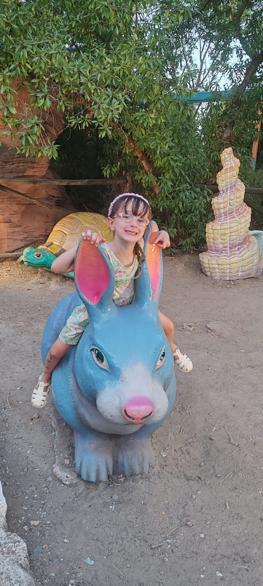

¡Te invito a mi fiesta!
JIMENA CUMPLE 6 AÑOS

🎈 Toca mi foto para ver la magia 🎉
📅 — 🕔 17:00 h
📍 Burbuja’s Park
⏳ Cargando contador...
¡Habrá juegos, risas y mucha nieve imaginaria! ❄️
📍 Abrir ubicación
💬 Confirmar por WhatsApp
❄️💙☃️ Adoro los abrazos calentitos. Con cariño, Jimena ❄️💙☃️